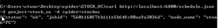

1、上传工具
scrapyd-client
2、安装方法：
pip install scrapyd-client
3、上传方法：
python d:\Python27\Scripts\scrapyd-deploy target -p project
注：
target -- 主机地址，如localhost;
project -- 工程名，如stock_uc;
4、前提：
①假设python安装位置d:\Python27\；
②需进入工程目录下执行上传命令；
③可选参数：
--version r03,即：
python d:\Python27\Scripts\scrapyd-deploy target -p project --version r03
1、Linux系统
一般情况下Linux系统自带curl工具，如果没有请百度安装方法；
2、Windows系统
1、下载地址：
链接：http://pan.baidu.com/s/1mgy9zVq
密码：4lqh
2、安装方法：
1）解压下载的文件夹，比如解压后的位置E:\bin-curl
2）添加解压后的文件夹路径到环境变量Path中，比如： D:\Python27\;D:\Python27\Scripts\;E:\bin-curl\;***
3）重启电脑是环境变量生效；
4）测试，运行：curl --help 查看帮助信息；
1、添加版本信息
curl http://localhost:6800/addversion.json -F project=myproject -F version=r23 -F egg=@myproject.egg
2、调度spider执行
curl http://localhost:6800/schedule.json -d project=myproject -d spider=somespider
3、取消spider的执行
curl http://localhost:6800/cancel.json -d project=myproject -d job=6487ec79947edab326d6db28a2d8651
4、列出工程
curl http://localhost:6800/listprojects.json
5、如何启动scrapyd，以及如何把一个现有的工程部署到scrapyd上面：
第一步：输入scrapyd，敲击enter，等待：
第二步：在这个服务器上部署工程，具体方法前面已经提到过
第三步：调度spider：

第四步：取消
第五步：列出工程
1，能正确安装scrapyd-client;
2，能够正确安装curl；
3，学会project的上传和spider的调度；
【本文由麦子学院独家原创，转载请注明出处并保留原文链接】